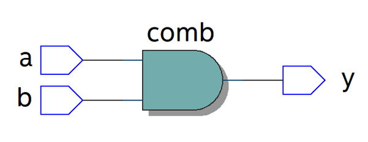

module gate ( input a, b, output y ); (y, a, b); endmodule 1. Which design level is used in this module? (gate, dataflow, behavioral) 2. What is the module name in this module? 3. Which keyword is used to declare ports in Verilog code that receive external signals?